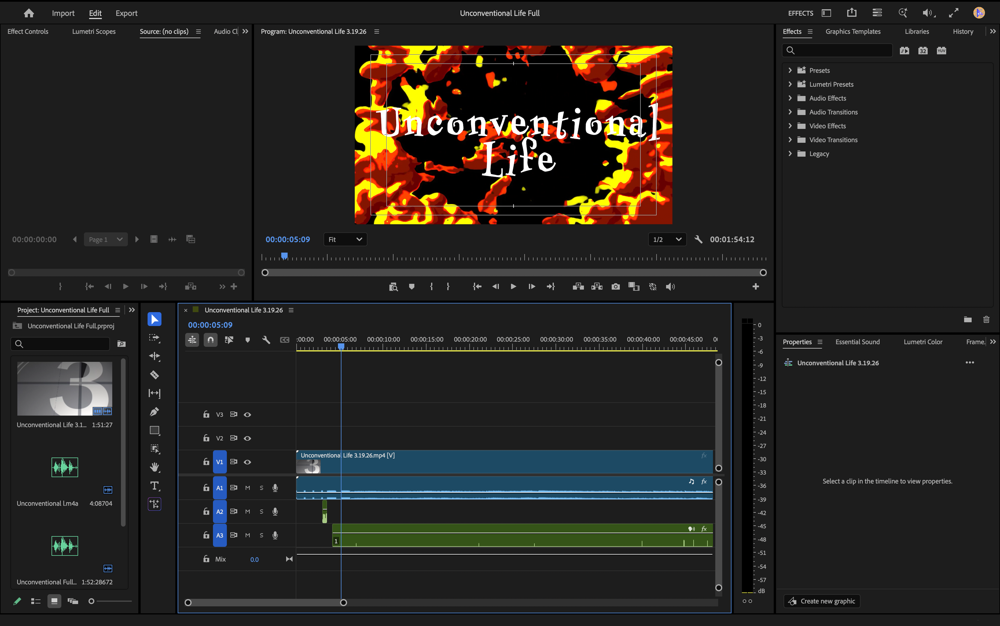
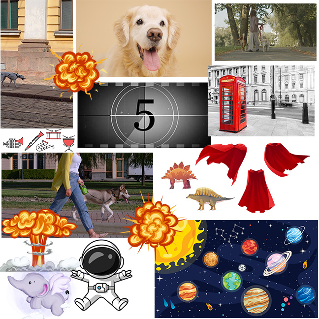
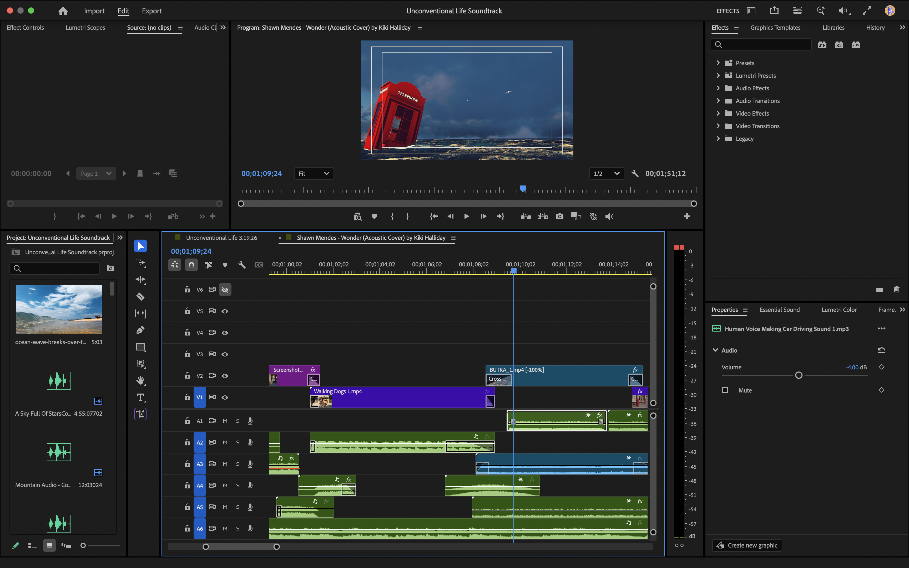
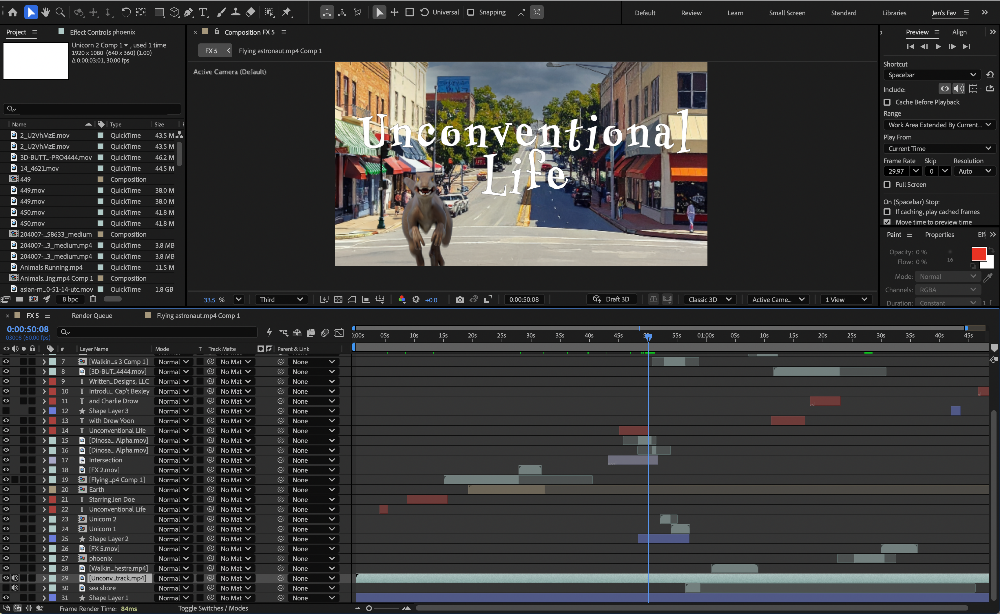

METHODS AND SOFTWARE
Adobe After Effects
Adobe Firefly
Adobe Illustrator
Adobe Photoshop
Adobe Premiere
ROLE
Motion Designer
Visual Storyteller
AI-Assisted Video Editor
DELIVERABLES
Concept Development
Storyboarding
Motion Design
Video Editing & Sound Design
Motion Design & Animation
AI-Assisted Visual Development
TOOLS & CREDITS
Music: "I Wonder"
Performed by Shawn Mendes
Music: "Star Full of Stars" (instrumental)
Performed by Symphoniacs
Music: "Star Full of Stars"
Performed by Majesty Rose
Adobe Firefly AI-generated imagery
Envato Elements (licensed subscription assets)
The goal was to create a unique opening sequence that combined AI-generated imagery, motion graphics, and audio design into a cohesive visual experience. The project challenged me to explore how concept development, art direction, pacing, and editing choices can transform individual AI-generated elements into an engaging narrative sequence.
DESIGN APPROACH
The visual direction embraces the unpredictable nature of AI-generated imagery by combining unexpected environments, characters, and visual concepts into a surreal television introduction. Adobe Firefly was used intentionally as part of the creative process, allowing experimentation with image generation, visual exploration, and new approaches to developing motion design assets.
Through compositing, animation, transitions, and sound design, the generated imagery was refined into a structured sequence with a consistent tone and rhythm. This project explored the role of AI as a creative tool while emphasizing the importance of human direction, storytelling, and design decisions in shaping the final experience.





